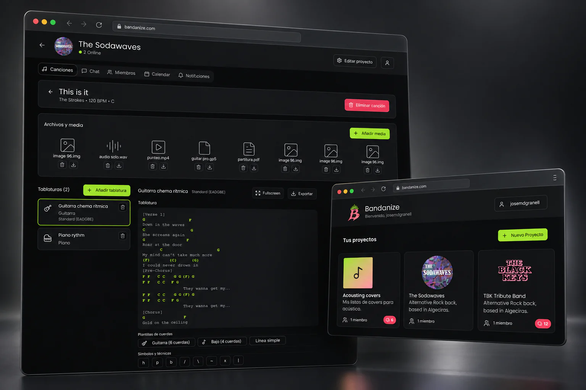

Start with the musical project
Projects bring collaborators and their material into a shared context, from song lists to individual tracks.
Bandanize
A personal project with Raúl del Valle, born from something we kept missing in our own music projects: a shared home for the material and plans that keep a band moving.

We could not find a platform that brought our musical projects, tablatures, files and calendars together in the way we wanted. We decided to design the tool we wished we had.
Projects bring collaborators and their material into a shared context, from song lists to individual tracks.
Tablatures, recordings and other files live around the song, helping the band keep useful material together.
A calendar, chat and notifications extend the workspace beyond the music itself, supporting the practical side of playing together.
Designing for a hobby we share made the project personal. It allowed us to bring our own experience into both the product structure and its playful visual identity.
Created with Raúl del Valle ↗